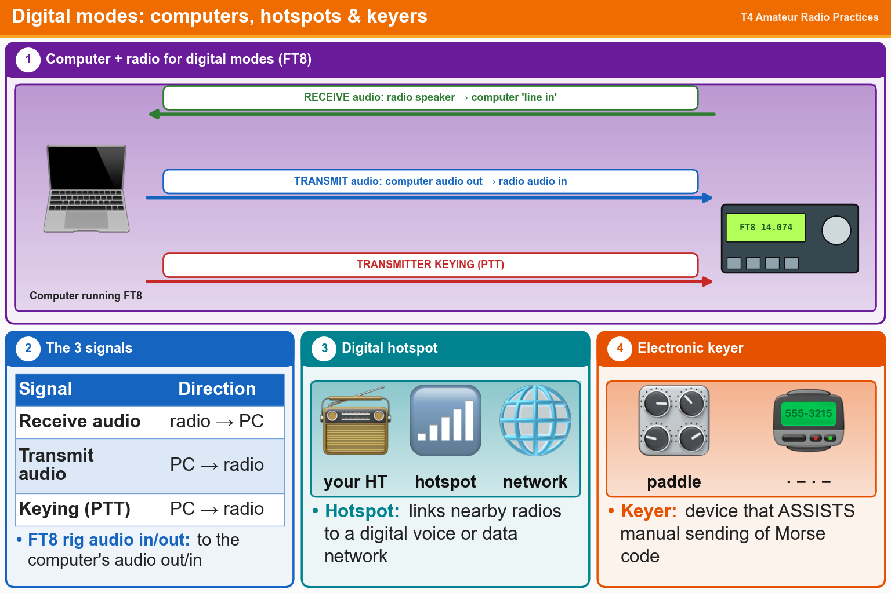

💡 Three connections: receive audio, transmit audio and PTT keying.
Tap an answer to check it.
T4A04
How are the audio input and output of a transceiver connected in a station configured to operate using FT8?
✘A.To an FT8 conversion unit, a keyboard, and a computer monitor
✔B.To the audio output and input of a computer running FT8 software
✘C.To a computer connected to the FT8converter.com website
✘D.To a computer running a terminal program and connected to a terminal node controller unit
T4A06
What signals are used in a computer-radio interface for digital mode operation?
✔A.Receive audio, transmit audio, and transmitter keying
✘B.NMEA GPS location and DC power
✘C.Antenna and RF power
✘D.Receive and transmit mode, status, and location
T4A07
Which of the following is one of the connections required between a computer and a transceiver to operate digital modes?
✘A.Computer “line out” to transceiver speaker connector
✘B.Computer “line in” to transceiver push-to-talk
✘C.Computer “line out” to transceiver push-to-talk
✔D.Computer “line in” to transceiver speaker connector
T4A10
What function does a digital mode hotspot perform for nearby transceivers?
✘A.RTTY encoding and decoding without a computer
✘B.FT8 digital communications via AFSK using a smartphone connected to the internet
✔C.Communication with a digital voice or data network
✘D.High-speed digital communications for meteor scatter
T4A12
What is an electronic keyer?
✘A.A device for voice activated switching from receive to transmit
✘B.A device for switching antennas from transmit to receive
✘C.An interlock to prevent unauthorized use of a radio
✔D.A device that assists in manual sending of Morse code